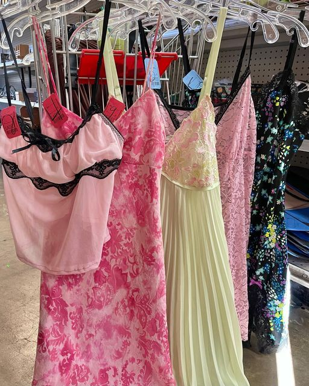

Shop Smarter Not Harder
When you shop secondhand, you're not only saving money, you're saving the environment too.

Impact Over Impulse
Your choice helps the planet to have a better future, choose secondhand to fight against fast fashion.

Search for Treasure
There are so many stylish pieces waiting to have a new life, thrift them for yourself and curate your new style with secondhand pieces.